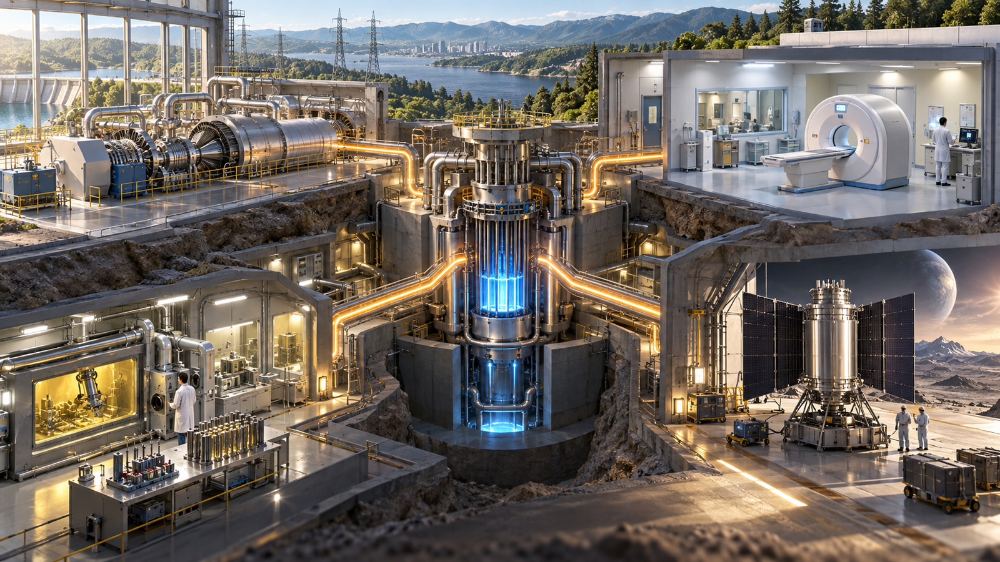
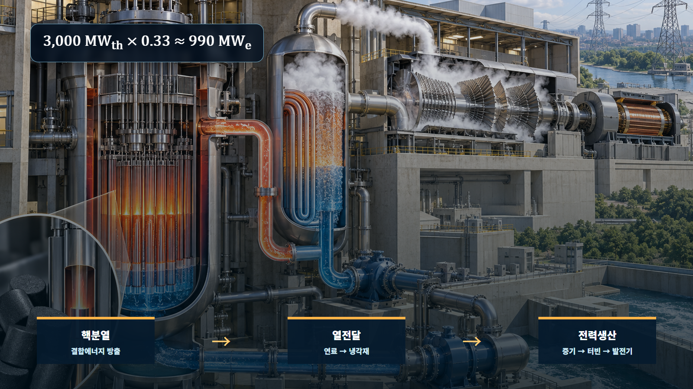
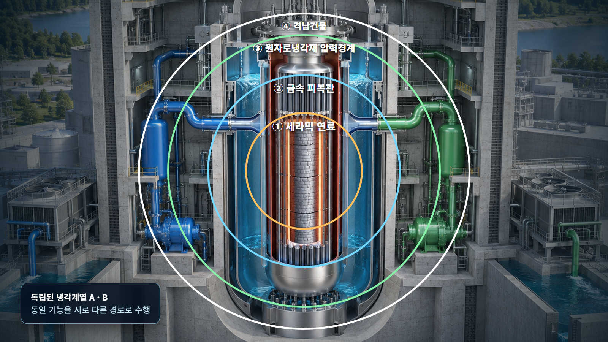

원자와 원자핵의 기초 · 001
원자력공학의 범위
원자핵에서 시작해 에너지·방사선·재료·안전을 하나의 시스템으로 연결하는 공학

원자력공학은 발전소만을 다루는 전공이 아닙니다. 원자핵과 방사선의 성질을 이해하고, 그 에너지를 유용한 기능으로 전환하며, 사람과 환경에 미치는 영향을 제한하는 여러 공학 분야의 연결체입니다.
원자력공학의 정의
원자력공학의 출발점은 원자핵에서 일어나는 변화와 방사선이 물질에 에너지를 전달하는 과정입니다. 그러나 연구실에서 핵반응을 관찰하는 데서 끝나지 않습니다. 핵반응으로 생긴 열을 옮기는 열수력, 높은 온도와 방사선에 견디는 재료, 상태를 측정하고 제어하는 계측제어, 노출을 줄이는 방사선방호, 고장을 가정해 결과를 확인하는 안전해석이 함께 실제 시스템을 만듭니다.
미시적 현상과 거시적 기능의 연결
핵분열 한 번은 눈으로 볼 수 없는 원자핵 규모의 사건입니다. 발전소에서는 이를 핵분열 → 연료의 열발생 → 냉각재의 열전달 → 증기의 터빈 회전 → 발전기의 전력생산이라는 다섯 단계의 에너지 변환으로 확대합니다. 각 단계에는 에너지 보존과 물질 수지라는 공통 원리가 적용되지만, 사용하는 장비와 확인해야 할 한계는 서로 다릅니다.

발전 시스템의 단계별 예시
예를 들어 원자로 출력이 3,000 MWth라면 이는 매초 3,000 MJ의 열에너지가 만들어진다는 뜻입니다. 열효율을 단순히 33%로 가정하면 전기출력은 3,000 MWth × 0.33 = 약 990 MWe가 됩니다. 나머지는 사라지는 것이 아니라 복수기와 냉각계통을 통해 환경으로 방출되는 열이 됩니다. 이 계산은 원자로물리뿐 아니라 열교환기, 터빈, 냉각원까지 함께 설계해야 하는 이유를 보여줍니다.
의료·산업 이용의 단계별 예시
두 번째 예시는 방사성추적자입니다. 인체나 배관에 극미량의 방사성동위원소를 넣으면 검출기는 그 동위원소가 방출하는 방사선을 따라 위치와 이동을 추정합니다. 병원에서는 특정 장기에 모이는 방사성의약품으로 기능 영상을 만들고, 산업에서는 유체가 배관을 통과하는 시간이나 혼합 상태를 확인할 수 있습니다. 두 경우 모두 발생원 선택 → 투입량 결정 → 이동 관찰 → 검출 신호 해석 → 불필요한 피폭 제한이라는 공학 절차를 공유합니다.
| 연결 영역 | 핵심 기능 | 대표 예시 | 주요 공학 질문 |
|---|---|---|---|
| 에너지·추진 | 핵반응 열의 변환 | 원전, 선박 추진 | 열을 얼마나 안정적으로 제거하는가 |
| 의료·산업 | 방사선의 측정과 이용 | 기능영상, 비파괴검사 | 필요한 신호와 불필요한 선량을 어떻게 구분하는가 |
| 재료·계통 | 열·압력·조사환경의 건전성 유지 | 피복관, 압력용기 | 사용기간 동안 물성이 어떻게 변하는가 |
| 안전·방호 | 고장 예방과 영향 완화 | 다중장벽, 차폐, 감시 | 하나가 실패해도 핵심 기능이 유지되는가 |
실제 설계의 안전 통합
원자력 안전은 완성된 설비에 마지막으로 붙이는 부속 기능이 아닙니다. 연료 세라믹, 금속 피복관, 원자로냉각재 압력경계와 격납건물은 방사성물질의 이동을 차례로 제한합니다. 반응도 제어, 노심 열 제거, 방사성물질 격리라는 안전기능에는 중복된 기기와 전원이 배치됩니다. 설계자는 정상운전뿐 아니라 기기 한 대의 고장, 전원 상실, 냉각능력 저하를 가정해 온도·압력·선량이 정해진 기준을 넘지 않는지 계산합니다.

발전소 전공이라는 오해와 모델의 한계
원자력공학을 발전소 운전기술과 동일시하면 의료, 산업검사, 우주전원, 방사선 계측 같은 넓은 응용을 놓치게 됩니다. 반대로 핵반응의 높은 에너지만 강조하면 열전달 손실, 재료 열화, 폐기물 관리와 인간의 운영이라는 현실 조건을 과소평가할 수 있습니다. 앞의 33% 효율 계산도 개념을 설명하는 단순 예시일 뿐이며 실제 효율은 증기조건, 터빈 성능, 냉각수 온도와 보조전력에 따라 달라집니다.
핵심 정리
원자력공학은 원자핵과 방사선의 원리를 출발점으로 삼아 에너지 변환, 재료와 계통, 계측제어, 방사선 이용, 안전과 방호를 연결합니다. 작은 규모의 물리현상을 사회가 사용할 수 있는 기능으로 확대하면서 전체 수명주기의 위험을 함께 관리하는 시스템 공학이라는 관점이 이후의 모든 원자력이론을 이해하는 기준이 됩니다.